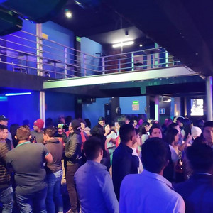

¿Qué son?
Las fiestas son eventos o celebraciones que marcan ocasiones especiales, ya sea a nivel cultural, religioso, social o personal. Estas reuniones festivas suelen involucrar actividades alegres, expresiones de felicidad, interacciones sociales y, a menudo, rituales específicos. Las fiestas pueden variar en su naturaleza y propósito, abarcando desde celebraciones religiosas y eventos nacionales hasta festividades familiares o sociales. Las fiestas desempeñan un papel importante en la vida humana al proporcionar momentos de alegría, conexión interpersonal y la oportunidad de conmemorar acontecimientos significativos. Estas celebraciones pueden incluir rituales específicos, decoraciones festivas, música, danzas y, por supuesto, la participación activa de las personas que se unen para compartir la experiencia festiva. En última instancia, las fiestas son expresiones culturales y sociales que contribuyen a fortalecer los lazos comunitarios y a enriquecer la vida de las personas.
Independientemente de su origen cultural, religioso o social, las fiestas comparten la característica común de romper la rutina diaria y permitir que las personas se reúnan para celebrar algún aspecto de la vida. Estas celebraciones pueden variar en su escala y naturaleza, desde eventos masivos que abarcan festivales culturales hasta reuniones más íntimas, como celebraciones familiares. En el contexto cultural, las fiestas reflejan la identidad y las tradiciones de una comunidad específica. Estos eventos a menudo incluyen manifestaciones artísticas, música, danzas y otros elementos que destacan la riqueza cultural de una sociedad. Desde una perspectiva social, las fiestas proporcionan oportunidades para la interacción interpersonal y la creación de recuerdos compartidos. Celebraciones como cumpleaños, bodas o simplemente reuniones informales con amigos representan momentos importantes para fortalecer los lazos sociales.